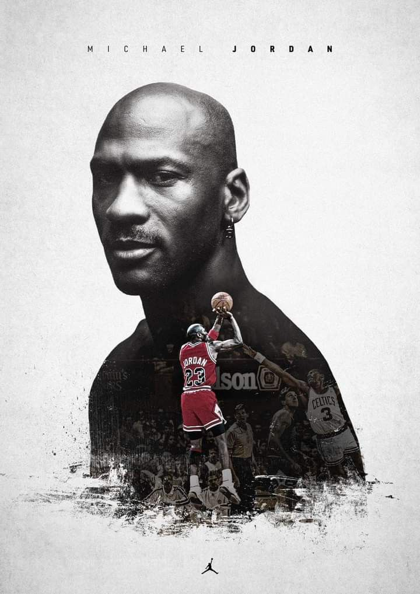

A história de Michael Jordan com a Air Jordan começou em 1984, quando o jovem astro da NBA assinou um contrato com a Nike, que na época ainda não era tão influente no basquete. A parceria deu origem ao primeiro tênis Air Jordan 1, lançado em 1985, que revolucionou o mercado esportivo e da moda. O modelo ficou famoso não só pelo design e desempenho, mas também porque a NBA chegou a bani-lo por não seguir o padrão de cores da liga — o que só aumentou sua popularidade. Desde então, a linha Air Jordan se tornou um ícone cultural e símbolo de sucesso, estilo e superação, assim como o próprio Michael Jordan.
